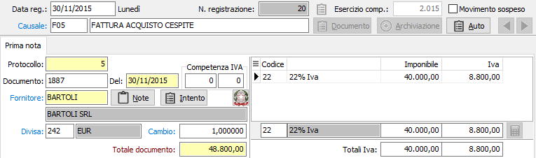
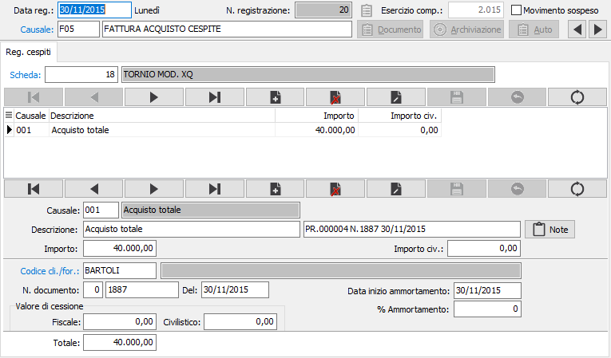
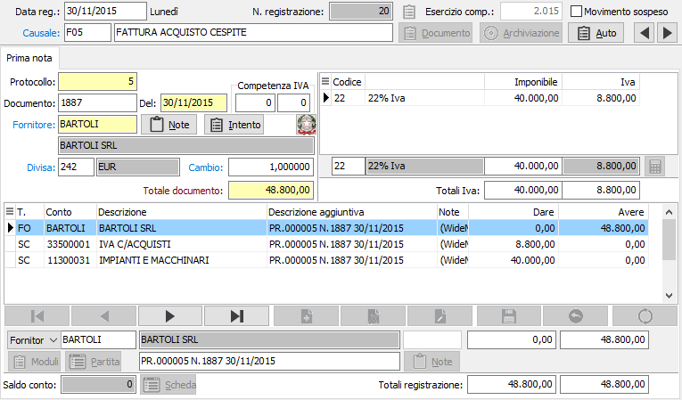

Introduzione
Il modulo Gestione Cespiti provvede alla gestione integrale della problematica attinente al trattamento dei beni ammortizzabili.
Consente la memorizzazione delle anagrafiche dei beni ammortizzabili, la creazione dei movimenti di acquisto in sede di registrazione della fattura di acquisto; la gestione delle variazioni intercorrenti nell'esercizio, la simulazione di ammortamenti infrannuali pro quota, la gestione degli ammortamenti definitivi con contestuali scritture contabili e la stampa del libro cespiti.
L'elemento fondamentale della gestione è costituito dalla registrazione di un movimento contabile, di acquisto o vendita, che avviene contestualmente all'immissione della prima nota contabile, tramite apposita causale.
I movimenti contabili relativi agli ammortamenti vengono invece generati nell'ambito della procedura di gestione cespiti. Da ciò scaturisce il calcolo simulato delle quote di ammortamento da imputare all'esercizio, anche in frazione di anno, oppure la generazione automatica delle scritture contabili relative agli ammortamenti, con contestuale aggiornamento della scheda cespite.
Ammortamenti civilistici
A seguito dell’abrogazione del quarto comma dell’articolo 106 del TUIR, non è più possibile inserire in bilancio voci che abbiano una mera giustificazione fiscale.
Le poste che fino al 2004 venivano iscritte in bilancio solo perché previste da norme fiscali erano diverse (accantonamenti per svalutazione crediti, ammortamenti anticipati), ma sicuramente quella che comporta maggiori problematiche da gestire è proprio l’ammortamento anticipato.
Da qui è nata l’esigenza di gestire un doppio binario fiscale-civilistico: in pratica dal momento in cui la scheda viene inserita nell’anagrafica del cespite vengono tenuti distinti e separati gli importi ai fini fiscali e gli importi ai fini civilistici, tanto che le stampe chiedono di volta in volta il valore da trattare. Sulle schede cespiti sono presenti doppi totalizzatori e sia su schede che su movimenti sono presenti i dati relativi all'ammortamento civilistico.
Tutte le operazioni che vanno ad incidere sul bilancio (contabilizzazione ammortamenti, simulazione ammortamenti con generazione movimenti di rettifica) trattano gli importi civilistici.
Alla fine dell’esercizio per la corretta compilazione del quadro EC del modello Unico è necessario estrarre le informazioni relative agli ammortamenti fiscali applicate, considerando le eccedenze rispetto agli ammortamenti civilistici.
Avviamento
Per attivare la procedura di Gestione cespiti, l'utente dovrà controllare e predisporre una serie di tabelle secondo una precisa sequenza operativa. La corretta esecuzione di tali operazioni è condizione imprescindibile per non incontrare difficoltà durante l'uso dei programmi della procedura. La sequenza prevede:
Controllo e completamento della tabella Configurazione cespiti
Controllo e completamento della tabella Causali cespiti
Controllo e completamento della tabella Totalizzatori cespiti
Controllo e completamento della tabella Configurazione codici fissi
Controllo e completamento della tabella Causali contabili
Caricamento della tabella Categorie fiscali cespiti
Eventuale caricamento della tabella Categorie gestionali
Caricamento dati cespiti pregressi
Quando una azienda già attiva inizia ad utilizzare l'applicazione, dispone certamente di un parco cespiti ammortizzabili, acquistati nei vari anni precedenti, ciascuno dei quali presenta una propria situazione di ammortamento. Risulta evidente la necessità di procedere quindi al caricamento di tali cespiti pregressi, allo scopo di poter gestire complessivamente il parco cespiti e di gestire correttamente gli ammortamenti per gli anni successivi. L’utente dovrà quindi procedere all’inserimento di tutte le anagrafiche cespiti. E’ presente una procedura di servizio che permette di inserire manualmente (oppure importare attraverso un file di testo) le informazioni necessarie per la ripresa saldi delle schede cespiti, indicando i dati anagrafici della scheda ed i totali della scheda all’esercizio di apertura dei cespiti, vengono generati i corrispondenti movimenti.
Il semplice caricamento delle anagrafiche cespiti non è sufficiente per proseguire con la gestione. Ciascun cespite caricato ha un valore d’origine e dispone di un fondo ammortamento di una certa consistenza. Potrebbe essere parzialmente deducibili, e quindi disporre anche di una quota non ammortizzabile. Tutte queste informazioni che, se presenti, vengono riepilogate nella linguetta Totali scheda di ciascuna Scheda Cespiti, devono essere inserite mediante il programma Movimenti cespiti. Naturalmente l’utente inserirà direttamente i totali pregressi per ciascuna causale relativi ad un singolo cespite, evitando di ripetere singolarmente i vecchi movimenti di ciascun anno precedente.
Operazioni contabili sui cespiti
Come si è già più volte ricordato, le registrazioni inerenti i cespiti sono contestuali alle correlative registrazioni contabili. In tale occasione, la causale contabile attiva il richiamo della procedura cespiti tramite l'apposito flag Libro cespiti; se necessario, si dovrà creare interattivamente una nuova anagrafica cespiti e infine una appropriata causale cespiti attiverà l'accesso ai campi.
Vediamo un esempio di registrazione di un acquisto di cespite, utilizzando una apposita causale.

Non appena completata la sezione video Iva acquisti, si apre automaticamente la finestra video Registrazione cespiti che richiede l’indicazione del numero di scheda cespite su cui si vuole operare. E’ naturalmente possibile effettuare la ricerca di un cespite esistente tramite la funzione F9, nel caso di debba registrare un incremento o un adeguamento del cespite in questione.
E’ invece probabile, in caso di fattura di acquisto, che il cespite non esista ancora e debba essere creato interattivamente utilizzando la funzione CTRL+W che accede all’anagrafica cespiti dove è possibile procedere al caricamento del nuovo cespite. Nel caso in cui la fattura contenga più cespiti, è possibile memorizzarli tutti.
In entrambi i casi, una volta indicato il cespite il cursore passa al campo causale del pannello di input. La finestra video risulta infatti ripartita in tre sezioni: la sezione superiore visualizza l’anagrafica del cespite attivo; la sezione centrale visualizza la griglia delle operazioni sui cespiti e la sezione inferiore contiene il pannello di input. La finestra video è sempre la stessa qualsiasi sia l’operazione contabile che la richiama.

CAUSALE: indicare il codice della causale cespiti relativa il movimento che si vuole trattare. Sul campo è attiva la ricerca F9 sulla tabella causali cespiti. A conferma, viene visualizzata la prima descrizione.
DESCRIZIONE AGGIUNTIVA: inserire una eventuale ulteriore descrizione del rigo del movimento a completamento della descrizione fissa.
IMPORTO: Inserire l'importo del movimento.
CODICE CLIENTE/FORNITORE: inserire il codice del cliente/fornitore a cui fa riferimento il movimento cespite in esame, nel caso in cui la casuale renda attivo questo campo. Sul campo è attiva la ricerca F9 sulla relativa anagrafica.
PERCENTUALE DI AMMORTAMENTO: inserire la percentuale di ammortamento applicata nel caso si tratti di un movimento di ammortamento.
VALORE DI CESSIONE: inserire l'importo del valore di cessione nel caso in cui la causale utilizzata renda attivo questo campo.
A conferma del movimento o dei movimenti, premendo pagina giù il programma ritorna alla finestra video prima nota. All’atto della conferma della registrazione contabile, il programma registra anche il movimento nella tabella movimenti Cespiti e aggiorna i totalizzatori dei cespiti trattati.
